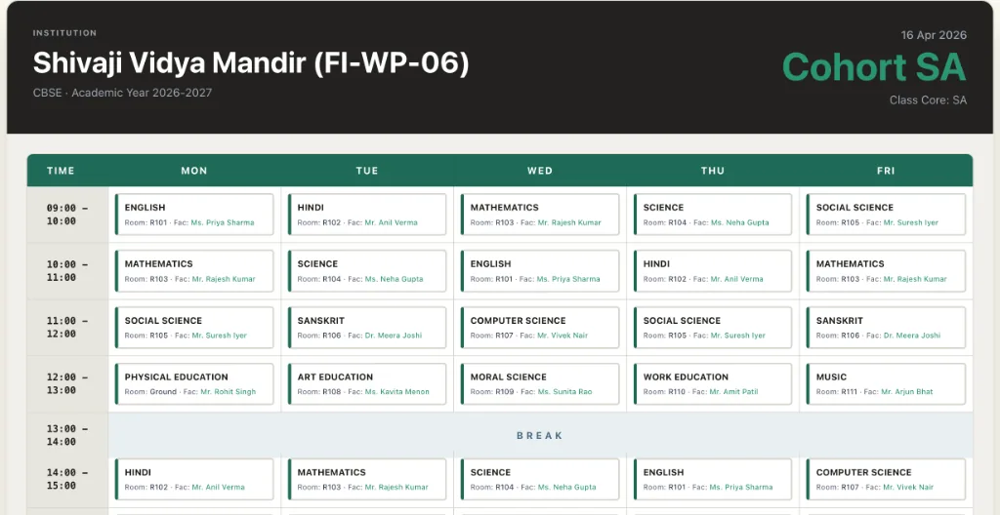
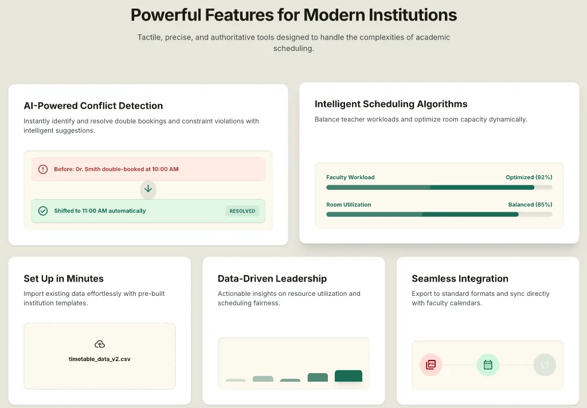
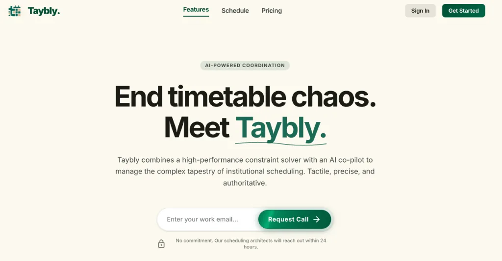

Overview
Taybly is an AI-powered timetable scheduling system designed for schools and colleges. It handles teachers, rooms, subjects, periods, and a dense web of conflicting constraints — and resolves them into a conflict-free schedule automatically.
The problem wasn't just hard computationally. It was hard organisationally: institutions had decades of informal rules, staff preferences, and administrative quirks that no spreadsheet could capture.

The Problem
Most schools were doing this manually — in Excel, on paper, or using tools that could suggest but never solve. A single school with 40 teachers, 30 classrooms, and 6 periods a day has billions of possible schedule permutations.
A teacher can't be in two rooms at once. A room can only hold one class. These are non-negotiable — violating them makes the timetable invalid.
Teachers prefer certain days off. Labs need to be consecutive. Double periods for some subjects. These are preferences — important, but negotiable.
Every institution has custom rules built over years. The system had to be expressive enough to capture all of them without requiring a developer.

Approach
I built a custom constraint propagation engine layered on top of a backtracking solver. Hard constraints are enforced by the engine; soft constraints are scored and ranked so the best valid solution floats to the top.
The interface was designed so an administrator could express complex institutional rules in plain language — no code, no configuration files. The AI co-pilot interprets intent and converts it to constraint definitions.
"If you can see the system, you can fix the system. Every constraint needed to be transparent and editable — not a black box."
The final output is a printable, exportable, fully conflict-free timetable — generated in under 4 seconds for most institutions. Teachers get personalised schedule views, admins get an override panel, and the system flags soft constraint violations so they can be reviewed and accepted.

Outcome
Taybly went from concept to production in under a year, built end-to-end as a solo effort. The constraint engine, the UI, the export system, and the AI co-pilot layer were all designed and shipped by one person.
The result: institutions that previously spent 2–3 weeks manually building timetables now generate conflict-free schedules in minutes, with full visibility into every decision the system made.